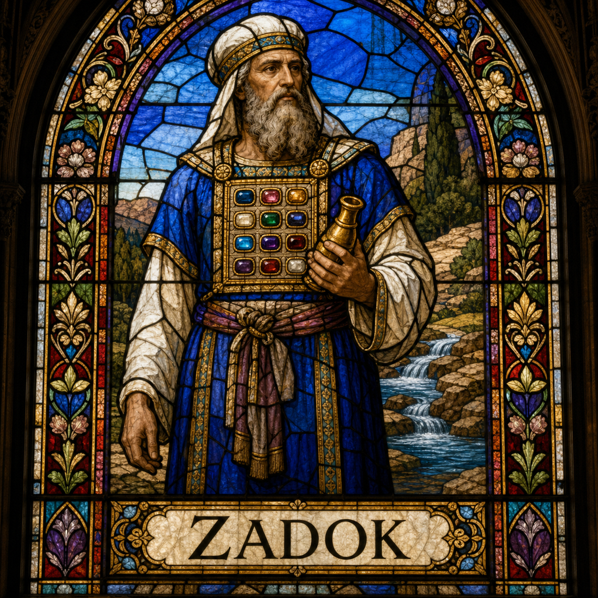

Zadok (M)
First named in 2 Samuel 8:17
Zadok served as one of David's chief priests and remained conspicuously loyal during Absalom's rebellion: when David fled Jerusalem, Zadok and the Levites wanted to carry the ark of the covenant into exile with him, but David sent it back, telling Zadok to keep it in the city and relay news of Absalom's plans back to David through his son Ahimaaz (2 Samuel 15:24-36). When David was old and his son Adonijah tried to seize the throne without approval, Zadok sided with the prophet Nathan and Bathsheba in support of Solomon, and it was Zadok who anointed Solomon king at the Gihon spring (1 Kings 1:32-45). This loyalty was rewarded decisively: when Solomon consolidated power, he removed the priest Abiathar, who had backed Adonijah, from office entirely and made Zadok sole high priest (1 Kings 2:26-27, 35). This transition quietly fulfilled an old prophecy given generations earlier against the corrupt house of Eli, that God would raise up "a faithful priest" in its place — since Abiathar descended from Eli's line through Ithamar, while Zadok descended from Aaron's son Eleazar (1 Samuel 2:27-35). Zadok's descendants continued as Jerusalem's priestly line for centuries, and Ezekiel later singled out "the sons of Zadok" as the faithful priests of his vision of a restored temple (Ezekiel 44:15-16).
Thought for Today
Zadok’s story teaches us about priesthood; may we look to Jesus, whose grace and truth never fail.
References: 2 Samuel 8:17; 2 Samuel 15:24-36; 2 Samuel 17:15; 2 Samuel 18:19-27; 2 Samuel 19:11; 2 Samuel 20:25; 1 Kings 1:8-45; 1 Kings 2:35; 1 Kings 4:2-4; 1 Chronicles 6:8-53; 1 Chronicles 12:28; 1 Chronicles 18:16; 1 Chronicles 24:3-31; 1 Chronicles 27:17; 1 Chronicles 29:22; 2 Chronicles 31:10